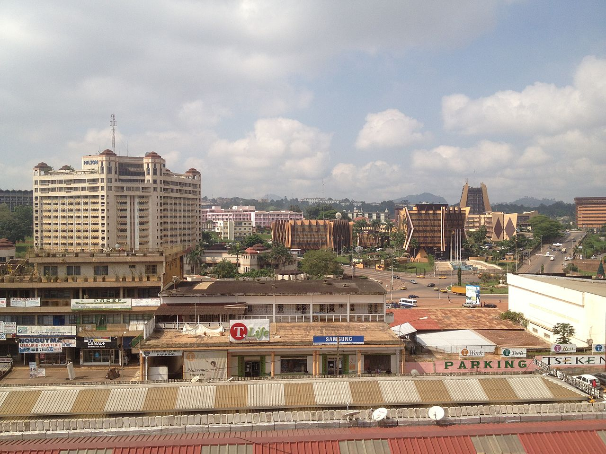
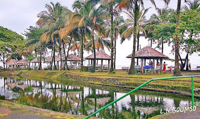

Yaoundé, spread over 7 hills, is the capital city of Cameroon. It is in the southern part of the country. The 20th-century Notre Dame des Victoires cathedral has a striking triangular roof. Nearby, in the Lake Quarter, the former presidential palace is home to the National Museum, with cultural exhibits such as masks and sculptures. Farther west, Mvog-Betsi Zoo is home to primates rescued from the bushmeat trade.
Victoria was founded by the British missionary Alfred Saker of the Baptist Missionary Society of London in June 1858. Due to this treaty, initially Victoria and its vicinity was not part of the new German colony Kamerun and remained under British administration. On May 7, 1886 Great Britain and Germany agreed to exchange Victoria and its vicinity for German rights at the Forcados River in Nigeria and St. Lucia, KwaZulu-Natal in South Africa. On March 28, 1887 Victoria and its vicinity were handed over to the German administration. At the same time Swiss Presbyterian missionaries bought the land from the Baptist Missionary Society in 1887. Victoria became British again in 1915. In 1982 Victoria was renamed "Limbe" by Ahmadou Ahidjo. Limbe was recently acknowledged by the Cameroonian government for its role played in the trade of slaves. The current site (Bimbia) is being restored for tourists, who would like to understand how slaves made their way from far distances to the coastal city.
Buea, originally spelled "Gbea", was founded by a hunter who came from the Bomboko area. Coming from the Bomboko side of the mountain, he named the new-found land in amazement as "Ebe'eya", meaning literally a "place of happenings". A prominent King of the Bakweri (whose headquarters is Buea) was chief Kuva Likenye, whose clashes with German troops during the Bakweri resistance remain popular folklore; currently ruled by the Endeleys. Tea growing is an important local industry, especially in Tole. Buea was the colonial capital of German Kamerun from 1901 to 1919, the capital of the Southern Cameroons from 1949 until 1961 and the capital of West Cameroon until 1972, when Ahmadou Ahidjo abolished the Federation of Cameroon. The German colonial administration in Buea was temporarily suspended during the eruption of Mount Cameroon from 28 April until June 1909. Originally, Buea's population consisted mainly of the Bakweri people. However, owing to its status as a university town and the regional capital, there are significant numbers of other ethnic groups.